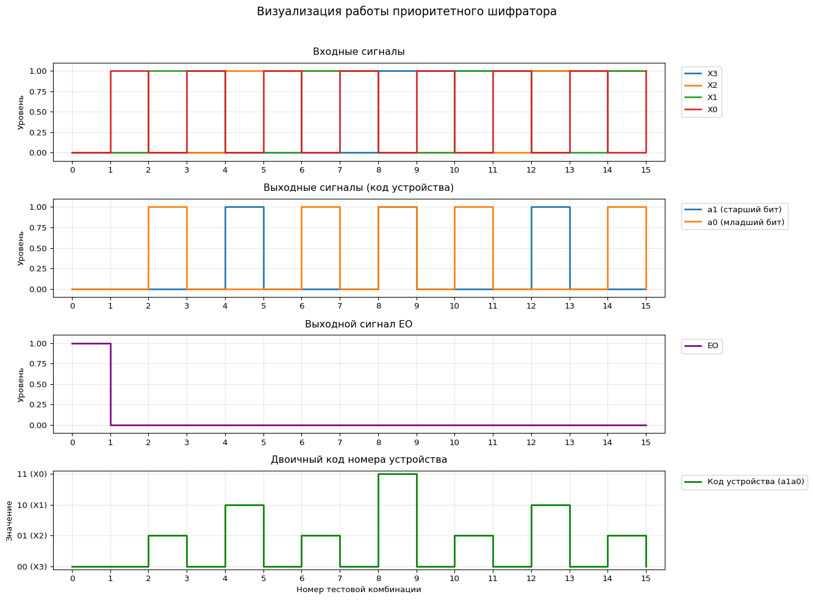

import matplotlib.pyplot as plt
import numpy as np
from IPython.display import display, Markdown
def priority_encoder(X):
"""
Приоритетный шифратор с 4 входами (X3, X2, X1, X0)
X3 имеет высший приоритет, X0 - низший
Возвращает кортеж (a1, a0, EO)
"""
if X[3]:
return (0, 0, 0)
elif X[2]:
return (0, 1, 0)
elif X[1]:
return (1, 0, 0)
elif X[0]:
return (1, 1, 0)
else:
return (0, 0, 1) # EO=1 когда все входы 0
# Генерируем все возможные комбинации входов (16 вариантов)
input_combinations = [(x3, x2, x1, x0)
for x3 in [0, 1]
for x2 in [0, 1]
for x1 in [0, 1]
for x0 in [0, 1]]
# Вычисляем выходы для каждой комбинации
outputs = [priority_encoder(inp) for inp in input_combinations]
# Создаем красивую таблицу истинности
table_header = "| X3 | X2 | X1 | X0 | a1 | a0 | EO |\n|----|----|----|----|----|----|----|"
table_rows = []
for inp, out in zip(input_combinations, outputs):
table_rows.append(f"| {inp[0]} | {inp[1]} | {inp[2]} | {inp[3]} | {out[0]} | {out[1]} | {out[2]} |")
display(Markdown("## Таблица истинности приоритетного шифратора"))
display(Markdown(table_header + "\n" + "\n".join(table_rows)))
# Визуализация сигналов
plt.figure(figsize=(14, 10))
plt.suptitle('Визуализация работы приоритетного шифратора', y=1.02, fontsize=14)
# Входные сигналы
ax1 = plt.subplot(4, 1, 1)
for i in range(4):
signal = [inp[i] for inp in input_combinations]
plt.step(np.arange(16), signal, where='post', label=f'X{3-i}', linewidth=2)
plt.title('Входные сигналы', pad=10)
plt.ylabel('Уровень')
plt.legend(bbox_to_anchor=(1.02, 1), loc='upper left')
plt.grid(True, alpha=0.3)
plt.ylim(-0.1, 1.1)
plt.xlim(-0.5, 15.5)
plt.xticks(np.arange(16))
# Выходные сигналы a1, a0
ax2 = plt.subplot(4, 1, 2, sharex=ax1)
a1_signal = [out[0] for out in outputs]
a0_signal = [out[1] for out in outputs]
plt.step(np.arange(16), a1_signal, where='post', label='a1 (старший бит)', linewidth=2)
plt.step(np.arange(16), a0_signal, where='post', label='a0 (младший бит)', linewidth=2)
plt.title('Выходные сигналы (код устройства)', pad=10)
plt.ylabel('Уровень')
plt.legend(bbox_to_anchor=(1.02, 1), loc='upper left')
plt.grid(True, alpha=0.3)
plt.ylim(-0.1, 1.1)
# Выходной сигнал EO
ax3 = plt.subplot(4, 1, 3, sharex=ax1)
eo_signal = [out[2] for out in outputs]
plt.step(np.arange(16), eo_signal, where='post', label='EO', linewidth=2, color='purple')
plt.title('Выходной сигнал EO', pad=10)
plt.ylabel('Уровень')
plt.legend(bbox_to_anchor=(1.02, 1), loc='upper left')
plt.grid(True, alpha=0.3)
plt.ylim(-0.1, 1.1)
# Двоичный код номера устройства
ax4 = plt.subplot(4, 1, 4, sharex=ax1)
device_code = [out[0]*2 + out[1] for out in outputs]
plt.step(np.arange(16), device_code, where='post', label='Код устройства (a1a0)',
linewidth=2, color='green')
plt.title('Двоичный код номера устройства', pad=10)
plt.xlabel('Номер тестовой комбинации')
plt.ylabel('Значение')
plt.legend(bbox_to_anchor=(1.02, 1), loc='upper left')
plt.grid(True, alpha=0.3)
plt.ylim(-0.1, 3.1)
plt.yticks([0, 1, 2, 3], ['00 (X3)', '01 (X2)', '10 (X1)', '11 (X0)'])
plt.tight_layout()
plt.show()Таблица истинности приоритетного шифратора
| X3 | X2 | X1 | X0 | a1 | a0 | EO |
|---|---|---|---|---|---|---|
| 0 | 0 | 0 | 0 | 0 | 0 | 1 |
| 0 | 0 | 0 | 1 | 0 | 0 | 0 |
| 0 | 0 | 1 | 0 | 0 | 1 | 0 |
| 0 | 0 | 1 | 1 | 0 | 0 | 0 |
| 0 | 1 | 0 | 0 | 1 | 0 | 0 |
| 0 | 1 | 0 | 1 | 0 | 0 | 0 |
| 0 | 1 | 1 | 0 | 0 | 1 | 0 |
| 0 | 1 | 1 | 1 | 0 | 0 | 0 |
| 1 | 0 | 0 | 0 | 1 | 1 | 0 |
| 1 | 0 | 0 | 1 | 0 | 0 | 0 |
| 1 | 0 | 1 | 0 | 0 | 1 | 0 |
| 1 | 0 | 1 | 1 | 0 | 0 | 0 |
| 1 | 1 | 0 | 0 | 1 | 0 | 0 |
| 1 | 1 | 0 | 1 | 0 | 0 | 0 |
| 1 | 1 | 1 | 0 | 0 | 1 | 0 |
| 1 | 1 | 1 | 1 | 0 | 0 | 0 |
